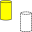

 Macro Toggle Drawstyle |
| Description |
|---|
| Cette macro permet de basculer style d'affichage de l'objet sélectionné. |
| Auteur |
| Piffpoof |
| Liens |
| Recettes macros Comment installer une macro Comment ajouter une barre d'outils |
| Version |
| 1.0 |
| Date dernière modification |
| 2016-02-25 |
{kind=link}
Description
Lorsque vous travaillez avec FreeCAD il y a des moments où vous voulez changer rapidement le style d'affichage (DrawStyle) de l'objet courant. Le bouton est disponible dans le menu déroulant DrawStyle où tous les modes peuvent être sélectionnés. Cette macro active 2 des modes disponibles comme un bouton cliquable sur une barre d'outils que l'utilisateur peut cliquer pour basculer entre les deux modes d'affichages. L'utilisateur peut modifier le code de macro pour sélectionner le mode d'affichage qu'ils souhaitent faire basculer. Cette macro n'ajoute pas de fonctionnalités dans le menu déroulant DrawStyles, mais donne une facilité d'exécution qui change de mode avec un clic de souris.
Installation
L'installation copiez le code dans le répertoire Macro approprié. Il est préférable de l'ajouter sur votre barre d'outils de manière à être facilement accessible.
PS: Vous devez adapter la macro à votre langage:
Pour le Français, "Filaire" active "Créer un filaire sur plusieurs points"
exemple avec la langue Allemande, remplacer le code (lignes 41, 42)
drawstyleA = "As is" drawstyleB = "Wireframe"
par:
drawstyleA = "Original" drawstyleB = "Drahtgitter"

Utilisation
Sélectionnez un objet, puis cliquez sur le bouton associé sur votre barre d'outils , ou appeler la à partir du menu Macro. Le Style d'affichage de l'objet sélectionné basculera entre les deux modes d'affichage des deux Styles d'affichage spécifiés dans le code de macro (voir liste de code ci-dessous). Remarque: Le cahier des charges pour chaque DrawStyle est listé dans le code, en modifiant le code (qui est documenté dans le code de macro), l'utilisateur peut sélectionner 2 Style d'affichage et basculer entre eux.
Interface utilisateur
L'objet sélectionné sera redessiné dans le deuxième Style spécifié dans la macro.
Script optimisé pour toutes les langues, sur un objet sélectionné ou pour tous les objets Keyboard shortcut, View toolbar - Wireframe (Sun Nov 27, 2016 6:49 pm)
Script
# -*- coding: utf-8 -*-
#
#
#Macro: Toggle Draw Style
#
# This macros allows the user to switch between different Drawstyles by clicking on
# the button of a Macro in a toolbar.
#
# initial code:triplus
# macro-isation:piffpoof
#
# This macro switches (or toggles) between 2 selected styles from the Drawstyle menu.
# As written the macro toggles between "WireFrame" and "As is".
# Immediately below this text is a list of the legal values for the Drawstyle menu.
# The first 2 lines of executable code are of the form "DrawstyleA = " followed by
# the 2nd line which is of the form "DrawstyleB = ".
# These 2 lines specify which of the Drawstyle values the macro will toggle between.
# Drawstyle "As is" is the system default and so is specified as the first drawstyle.
# The second line specifies which drawstyle will be toggled to and from.
# Any of the legal values may be used, so if, for example, it is desired to toggle between
# the Shaded and Points drawstyles, then the 2 lines of code would be modified to be:
#
# drawstyleA = "Shaded"
# drawstyleB = "Points"
#
# but remember that the hash signs ('#') are not to be present on the executable lines.
#
###Legal Values for Drawstyle###
#
#"As is"
#"FlatLines"
#"Shaded
#"Wireframe"
#"Points"
#
################################
from PySide import QtGui
# Constant definitions
drawstyleA = "As is"
drawstyleB = "Wireframe"
# code ***********************************************************************************
mw = FreeCADGui.getMainWindow()
for i in mw.findChildren(QtGui.QAction):
if i.text() == drawstyleA.decode("UTF-8"):
actionA = i
elif i.text() == drawstyleB.decode("UTF-8"):
actionB = i
else:
pass
if actionA.isChecked():
actionB.activate(QtGui.QAction.Trigger)
else:
actionA.activate(QtGui.QAction.Trigger)